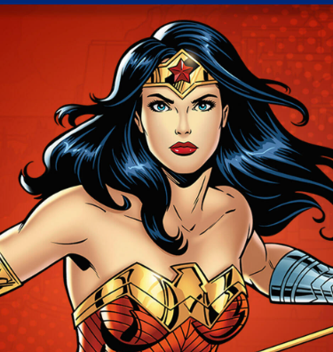
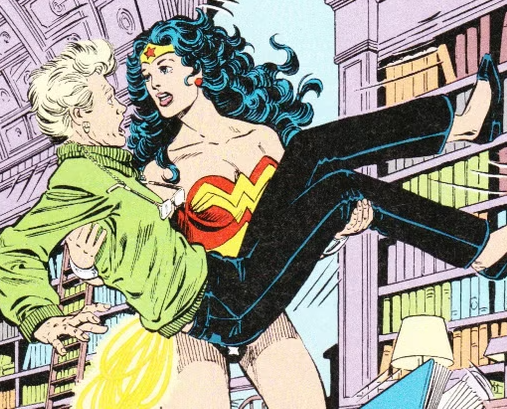
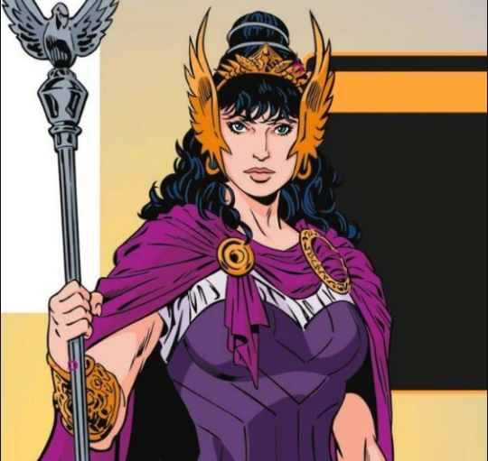
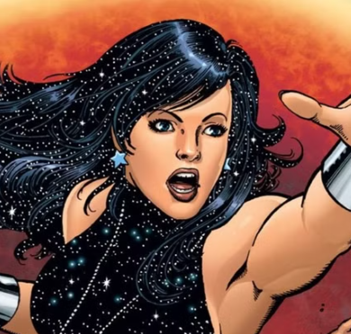
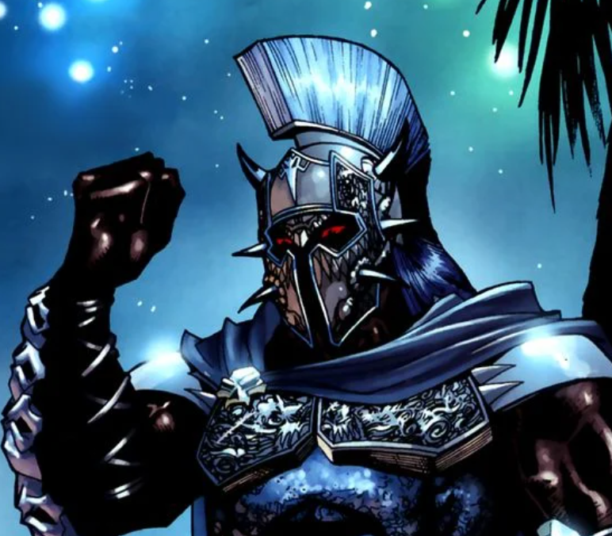
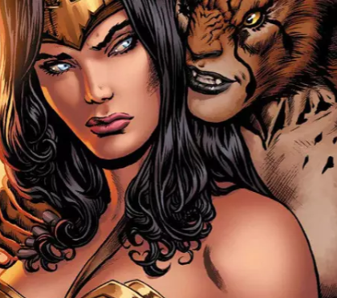
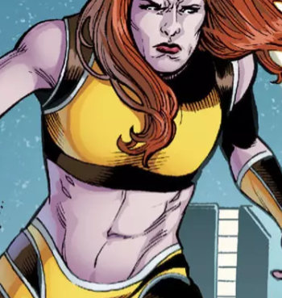

Sobre a Mulher Maravilha
Um pouco sobre ela
Mulher-Maravilha, é uma super-heroína criada por William Moulton Marston e estreou em 1941. Ela é filha da Rainha Hipólita e nasceu na ilha mágica de Themyscira, onde as Amazonas, uma civilização de mulheres guerreiras, vivem isoladas. Criada pelos deuses do Olimpo, Diana se torna uma semideusa e é enviada ao mundo dos homens como defensora da paz e justiça.
Seus poderes
Ela possui força sobre-humana, velocidade, agilidade, resistência, e é uma guerreira habilidosa. Suas armas mais famosas incluem o Laço da Verdade, que força as pessoas a dizerem a verdade, e o Escudo da Mulher-Maravilha, que a protege de ataques. Em algumas versões, ela pilota um avião invisível.
Suas principais características
Além de seus poderes, Mulher-Maravilha é um símbolo de coragem, liderança e empoderamento feminino, sendo uma das principais líderes da Liga da Justiça e um ícone de igualdade e justiça. Sua luta é tanto contra o mal quanto em defesa de direitos e liberdade.
Os aliados da Mulher Maravilha
Julia Kapatelis
Julia Kapatelis é a mentora da Mulher Maravilha,
desde quando ela foi apresentada ao Mundo do Patriarca.
Hipólita
Não há uma tonelada de personagens que poderiam dizer
que sua mãe é uma de suas aliadas mais próximas, mas a
Mulher-Maravilha é uma delas.
Dona Troy
Donna Troy teve suas origens mexidas com um bando.
O que ela era originalmente era uma jovem órfã que foi salva
pela Mulher-Maravilha e levada para a Ilha Paraíso.
Os vilões da Mulher Maravilha
Ares
Vilão do primeiro filme da heroína, Ares é um
desde quando ela foi apresentada ao Mundo do Patriarca.
Mulher-Leopardo
Recentemente, foi anunciado que a Mulher-Leopardo
será a vilã do segundo filme da Mulher-Maravilha,
e acreditem, isso é incrível.
Giganta
Como seu nome sugere, Giganta pode aumentar sua
estatura diversas vezes, isso também a deixa incrivelmente forte.